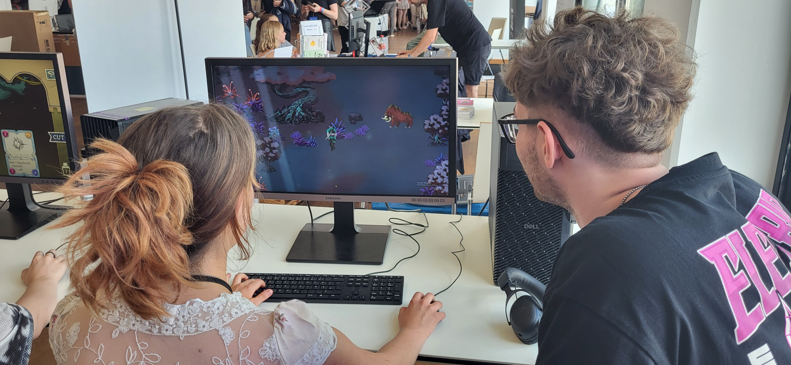
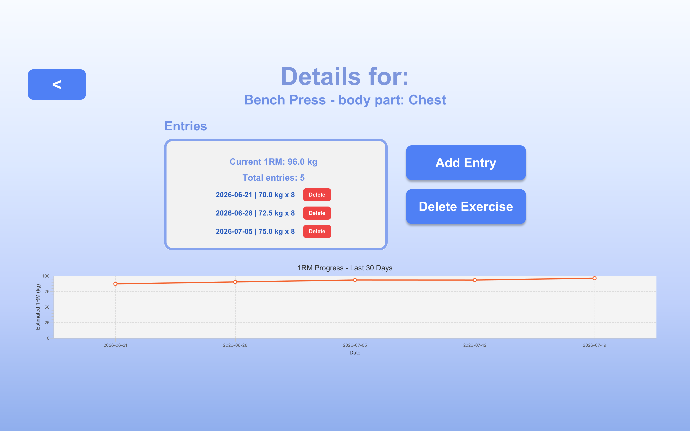
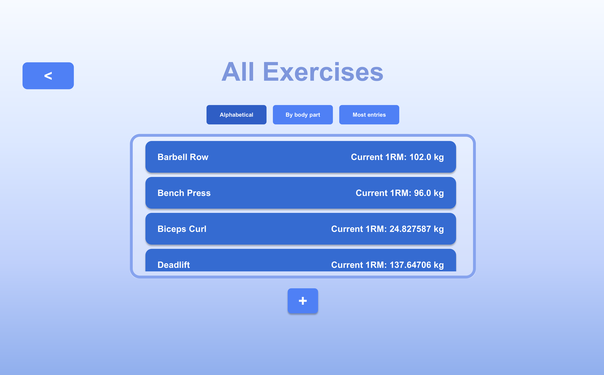

Selected Work
2025 - 2026
Unity, C#, Ink-Unity
Heavy Wake Trailer
Heavy Wake is a Unity-based deckbuilding RPG developed as a team project over two semesters. The game combines card-based combat, narrative elements and RPG progression in a stylized game world. Players explore the world, interact with characters and use cards strategically during combat encounters.
I was responsible for implementing the dialogue system using Ink-Unity and building the story sequencing / quest system. This included connecting narrative content with Unity gameplay logic, triggering dialogue events, managing story progression and ensuring that quests advanced correctly based on player interactions.

Heavy Wake was showcased at the A1 ESports Festival as part of a dedicated FH exhibition booth provided by our university. This gave us the opportunity to present the game to visitors, gather feedback and demonstrate the project in a public setting. The game was also released on Steam, making it accessible beyond the university context.
Heavy Wake at the A1 ESports Festival
June/July 2026
Java, JavaFX, SQLite,
Maven, JUnit, CSS


GymTracker is a JavaFX desktop application for tracking gym exercises, workout entries and estimated one-rep max progress. Users can create exercises, assign them to body parts, add weight/repetition entries and review their progress over time.
The app allows users to manage exercises, add and delete workout entries, calculate estimated 1RM values and view progress for individual exercises and body parts. It is built with Java and JavaFX, uses CSS for custom UI styling, stores data locally in SQLite and uses Maven for dependency management and building. The project separates UI, business logic and database access into dedicated classes, with JUnit tests covering core calculation and progress logic.
July 2026 -
Unity, C#
Muss ich noch ausfüllen !!!! BIlder sind Placeholder!!!
This page will grow with more projects in the future.